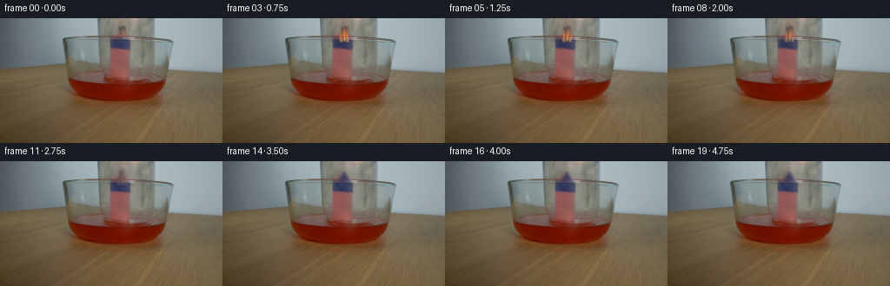
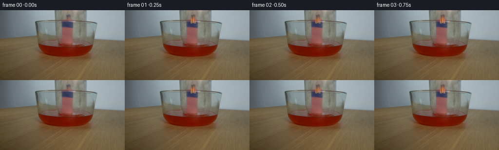
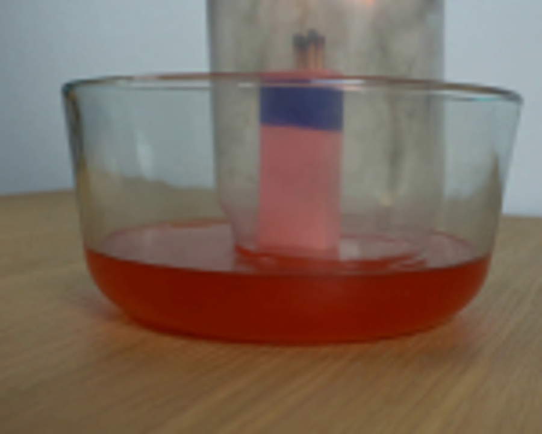
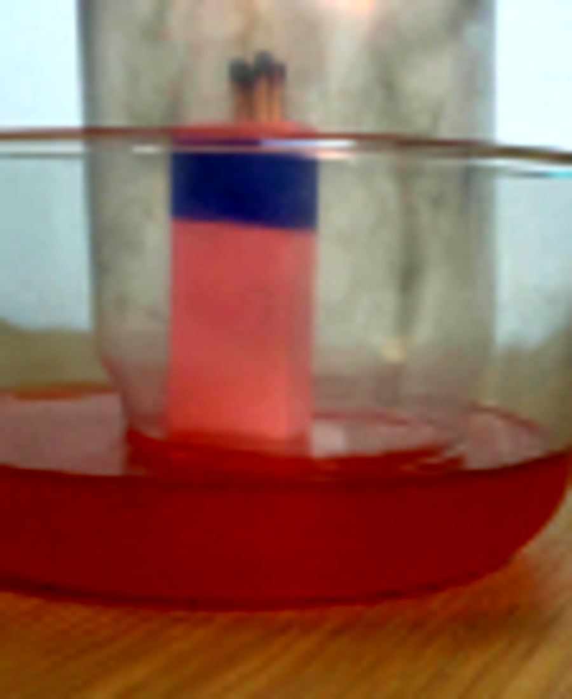
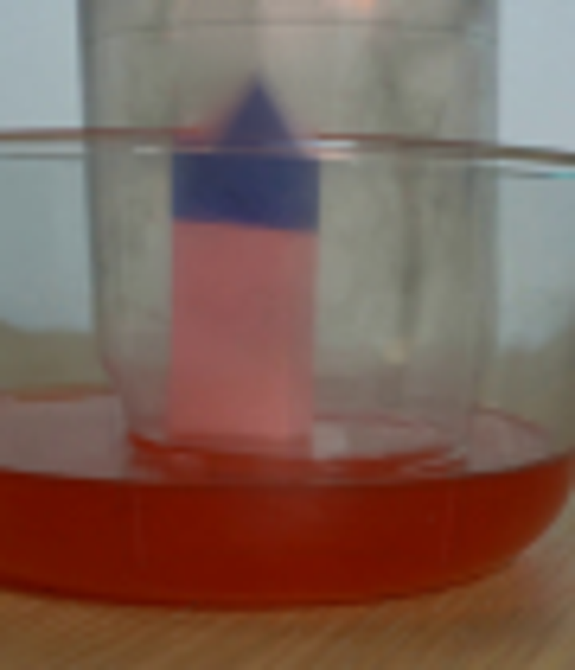
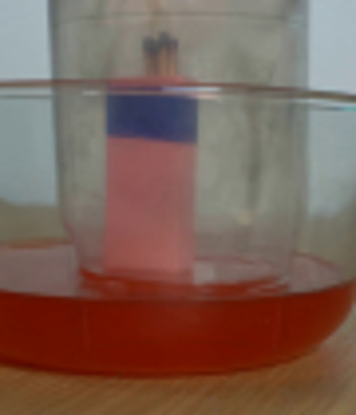
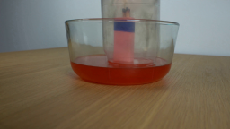

CODING AGENTS AS PIXEL WORLD MODELS
traex/GPT-5.6-Sol · 0165
点击播放 · 原生 RGB 像素
逐轮保存的候选
回放视频、检查图与代码变化。
每份候选均可单独播放。实际图片检查记录在下方工具轨迹中。
候选 01播放与检查图
点击播放 · 原生 RGB 像素


展开代码变化
--- 上一保存版本
+++ 本次保存版本
@@ -0,0 +1,196 @@
+from pathlib import Path
+import math
+import cv2
+import numpy as np
+from PIL import Image, ImageDraw, ImageFilter
+import artifact_io
+
+CASE_DIR = Path(__file__).resolve().parent
+W, H = 256, 144
+N = 20
+
+def smoothstep(x):
+ x = max(0.0, min(1.0, x))
+ return x*x*(3.0-2.0*x)
+
+def composite_rgb(frame, rgba):
+ """Alpha composite a PIL RGBA image over a uint8 RGB array."""
+ over = np.asarray(rgba, dtype=np.float32)
+ a = over[..., 3:4] / 255.0
+ return np.clip(frame.astype(np.float32)*(1-a) + over[..., :3]*a, 0, 255).astype(np.uint8)
+
+def soft_mask(size, shapes, blur=1.0):
+ m = Image.new('L', size, 0)
+ d = ImageDraw.Draw(m)
+ for kind, coords, fill in shapes:
+ getattr(d, kind)(coords, fill=fill)
+ if blur:
+ m = m.filter(ImageFilter.GaussianBlur(blur))
+ return np.asarray(m, np.float32)/255.0
+
+def glass_overlay(frame, drop, progress, idx):
+ """Subtle moving highlights and the descending mouth/base of the inverted jar."""
+ S = 4
+ ov = Image.new('RGBA', (W*S, H*S), (0,0,0,0))
+ d = ImageDraw.Draw(ov)
+ def line(points, fill, width=1):
+ d.line([(int(x*S),int(y*S)) for x,y in points], fill=fill, width=max(1,int(width*S)), joint='curve')
+ def arc(box, start, end, fill, width=1):
+ d.arc(tuple(int(v*S) for v in box), start, end, fill=fill, width=max(1,int(width*S)))
+
+ mouth_y = 72.0 + drop
+ # The jar extends above frame initially; its closed, rounded base slowly enters view.
+ base_y = -12.0 + drop
+ if base_y > -5:
+ alpha = int(30 * smoothstep((base_y+5)/11))
+ arc((113, base_y-3.0, 178, base_y+5.0), 180, 360, (46,55,54,alpha), .8)
+ arc((116, base_y-1.5, 175, base_y+3.2), 190, 350, (224,233,221,int(alpha*.72)), .55)
+ line([(118,base_y+1.5),(173,base_y+1.5)], (218,227,216,int(alpha*.28)), .45)
+
+ # Side walls: nearly stationary in x during a straight vertical descent, but the lower
+ # curved sections visibly extend towards the liquid.
+ a = 24
+ line([(112.5,0),(114.0,30),(116.0,55),(119.5,mouth_y-2)], (31,45,45,a), .65)
+ line([(178.0,0),(177.2,30),(175.2,55),(171.0,mouth_y-2)], (39,50,49,a), .65)
+ line([(115.3,2),(116.3,34),(119.2,58),(122.0,mouth_y-1)], (221,230,219,15), .55)
+ line([(175.7,2),(174.9,35),(172.9,59),(169.2,mouth_y-1)], (225,233,223,13), .5)
+
+ # Elliptical opening. It becomes redder and less contrasty as it is immersed.
+ immersion = smoothstep((mouth_y-73)/15)
+ edgea = int(31*(1-.44*immersion))
+ arc((119,mouth_y-4.0,173,mouth_y+4.0),180,360,(47,45,37,edgea),.75)
+ arc((119,mouth_y-4.0,173,mouth_y+4.0),0,180,(230,176,139,int(edgea*.50)),.6)
+ arc((121,mouth_y-2.7,171,mouth_y+3.7),0,180,(116,42,27,int(19+12*immersion)),.65)
+
+ # Soft moving specular glints make the otherwise clear object legible.
+ ygl = 31 + drop*.72
+ line([(119,ygl-15),(120,ygl+12)], (240,245,234,11), 1.4)
+ line([(167,ygl-20),(166,ygl+8)], (240,244,232,9), 1.1)
+
+ ov = ov.resize((W,H), Image.Resampling.LANCZOS)
+ return composite_rgb(frame, ov)
+
+def draw_flames(frame, idx, intensity):
+ if intensity <= 0.002:
+ return frame
+ S=4
+ ov=Image.new('RGBA',(W*S,H*S),(0,0,0,0))
+ d=ImageDraw.Draw(ov)
+ phase = idx*1.73
+ sway = 1.55*math.sin(phase) + .45*math.sin(phase*2.31)
+ pulse = .92 + .08*math.sin(idx*2.17)
+ inten = intensity*pulse
+
+ # warm aureole filtered through the transparent jar
+ glow=Image.new('RGBA',(W*S,H*S),(0,0,0,0)); gd=ImageDraw.Draw(glow)
+ gx=(140.3+sway*.45)*S
+ gd.ellipse((gx-8*S, 3*S, gx+8*S, 30*S), fill=(255,116,47,int(38*inten)))
+ glow=glow.filter(ImageFilter.GaussianBlur(5.2*S))
+ ov=Image.alpha_composite(ov,glow)
+ d=ImageDraw.Draw(ov)
+
+ # Three close flames correspond to the visible bundle of matchsticks.
+ bases=[(136.8,-.8,.84),(140.6,.25,1.0),(144.1,.7,.76)]
+ for k,(bx,extra,scale) in enumerate(bases):
+ local_sway=sway*(.7+.14*k)+extra
+ basey=28.0-(k%2)*1.0
+ height=(17.5+2.5*math.sin(phase+k*1.6))*scale*(.72+.28*inten)
+ tipx=bx+local_sway
+ tipy=basey-height
+ left=(bx-3.0*scale,basey-1)
+ right=(bx+3.0*scale,basey-1)
+ poly=[(left[0]*S,left[1]*S),((bx-2.4*scale+local_sway*.35)*S,(basey-height*.42)*S),
+ (tipx*S,tipy*S),((bx+2.3*scale+local_sway*.2)*S,(basey-height*.45)*S),(right[0]*S,right[1]*S)]
+ d.polygon(poly,fill=(238,96,30,int(132*inten)))
+ inner=[((bx-1.35*scale)*S,(basey-1)*S),((bx-.8*scale+local_sway*.2)*S,(basey-height*.38)*S),
+ ((bx+local_sway*.7)*S,(basey-height*.72)*S),((bx+1.25*scale)*S,(basey-1)*S)]
+ d.polygon(inner,fill=(255,193,76,int(178*inten)))
+ d.ellipse(((bx-.65)*S,(basey-5)*S,(bx+.75)*S,basey*S),fill=(255,225,135,int(150*inten)))
+ ov=ov.filter(ImageFilter.GaussianBlur(.42*S))
+ ov=ov.resize((W,H),Image.Resampling.LANCZOS)
+ return composite_rgb(frame,ov)
+
+def draw_smoke(frame, idx, strength):
+ if strength <= 0: return frame
+ S=4
+ ov=Image.new('RGBA',(W*S,H*S),(0,0,0,0)); d=ImageDraw.Draw(ov)
+ age=idx-10
+ # two delicate, irregular smoke threads trapped in the jar
+ for j in range(2):
+ pts=[]
+ for q in range(24):
+ y=27-q*1.25
+ x=140.5+j*2.0 + math.sin(q*.43+idx*.58+j)*(.6+q*.045) + age*.10
+ pts.append((int(x*S),int(y*S)))
+ d.line(pts,fill=(72,75,70,int((24-6*j)*strength)),width=max(1,int((1.05-.2*j)*S)))
+ ov=ov.filter(ImageFilter.GaussianBlur(1.15*S)).resize((W,H),Image.Resampling.LANCZOS)
+ return composite_rgb(frame,ov)
+
+def liquid_effect(frame, idx, drop):
+ """Ripples on entry, then a slight physically plausible rise of red water in the jar."""
+ S=4
+ ov=Image.new('RGBA',(W*S,H*S),(0,0,0,0)); d=ImageDraw.Draw(ov)
+ # contact ripples, visible chiefly to either side of the support
+ if 3 <= idx <= 12:
+ age=idx-3
+ r=19+age*2.2
+ alpha=int(28*(1-age/10))
+ for off,fac in [(0,1),(-4,.65)]:
+ box=((145-r)*S,(76+off-r*.16)*S,(145+r)*S,(76+off+r*.16)*S)
+ d.arc(box,195,345,fill=(238,148,98,int(alpha*fac)),width=2)
+ d.arc(box,15,165,fill=(93,35,24,int(alpha*.55*fac)),width=2)
+ # Once sealed, colored water rises a few pixels inside the jar.
+ rise=6.2*smoothstep((idx-11)/8)
+ if rise>.05:
+ level=72.5-rise
+ # narrow glass interior, mostly exposed on the two sides of the central holder
+ col=(151,42,26,int(20+8*smoothstep((idx-11)/8)))
+ d.rectangle((121*S,level*S,133*S,76*S),fill=col)
+ d.rectangle((153*S,level*S,170*S,76*S),fill=col)
+ d.arc((121*S,(level-2)*S,170*S,(level+2.5)*S),180,360,fill=(206,104,71,39),width=2)
+ ov=ov.filter(ImageFilter.GaussianBlur(.35*S)).resize((W,H),Image.Resampling.LANCZOS)
+ return composite_rgb(frame,ov)
+
+def main():
+ base=np.asarray(Image.open(CASE_DIR/'first_frame.png').convert('RGB'),dtype=np.uint8)
+ assert base.shape==(H,W,3)
+
+ # Clean plate only for the small pre-existing flame/glow; match heads below y=23 remain untouched.
+ bgr=cv2.cvtColor(base,cv2.COLOR_RGB2BGR)
+ mask=np.zeros((H,W),np.uint8)
+ cv2.ellipse(mask,(140,10),(12,16),0,0,360,255,-1)
+ mask[24:,:]=0
+ clean=cv2.cvtColor(cv2.inpaint(bgr,mask,3,cv2.INPAINT_TELEA),cv2.COLOR_BGR2RGB)
+ soft=cv2.GaussianBlur(mask,(0,0),2.2).astype(np.float32)/255.0
+ soft=soft[...,None]
+
+ frames=[]
+ for i in range(N):
+ if i==0:
+ frames.append(base.copy())
+ continue
+ p=smoothstep(i/10.0)
+ drop=18.0*p
+ # Existing glow is smoothly replaced by the animated flame, then fully removed.
+ extinguish=smoothstep((i-8)/6.0)
+ f=np.clip(base.astype(np.float32)*(1-soft*extinguish)+clean.astype(np.float32)*(soft*extinguish),0,255).astype(np.uint8)
+
+ f=glass_overlay(f,drop,p,i)
+ f=liquid_effect(f,i,drop)
+ if i<=7:
+ flame_int=.70 + .23*math.sin(math.pi*i/8)
+ elif i<=14:
+ flame_int=.72*(1-smoothstep((i-7)/7))
+ else:
+ flame_int=0
+ f=draw_flames(f,i,max(0,flame_int))
+ smoke_strength=smoothstep((i-9)/5)*(1-.28*smoothstep((i-16)/3))
+ f=draw_smoke(f,i,smoke_strength)
+ frames.append(f)
+
+ arr=np.stack(frames).astype(np.uint8)
+ assert np.array_equal(arr[0],base)
+ artifact_io.save(arr,CASE_DIR)
+
+if __name__=='__main__':
+ main()
候选 02播放与检查图
点击播放 · 原生 RGB 像素

展开代码变化
--- 上一保存版本
+++ 本次保存版本
@@ -155,11 +155,12 @@
base=np.asarray(Image.open(CASE_DIR/'first_frame.png').convert('RGB'),dtype=np.uint8)
assert base.shape==(H,W,3)
- # Clean plate only for the small pre-existing flame/glow; match heads below y=23 remain untouched.
+ # Clean plate only for the small pre-existing flame/glow at the top edge. The
+ # dark match heads around y=22 must remain, so the mask is deliberately remote.
bgr=cv2.cvtColor(base,cv2.COLOR_RGB2BGR)
mask=np.zeros((H,W),np.uint8)
- cv2.ellipse(mask,(140,10),(12,16),0,0,360,255,-1)
- mask[24:,:]=0
+ cv2.ellipse(mask,(157,5),(9,12),0,0,360,255,-1)
+ mask[17:,:]=0
clean=cv2.cvtColor(cv2.inpaint(bgr,mask,3,cv2.INPAINT_TELEA),cv2.COLOR_BGR2RGB)
soft=cv2.GaussianBlur(mask,(0,0),2.2).astype(np.float32)/255.0
soft=soft[...,None]
候选 03播放与检查图
可观测工具轨迹
实际执行的命令与返回图片。
命令 1exit 0
/bin/bash -lc "cat prompt.txt && printf '\\n--- GENERATION_RULES ---\\n' && cat GENERATION_RULES.md"
命令 2exit 0
/bin/bash -lc "find . -maxdepth 2 -type f -printf '%p\\n' | sort && printf '\\n--- tools ---\\n' && command -v ffmpeg && command -v python3 && command -v blender || true"
命令 3exit 0
/bin/bash -lc "python3 - <<'PY'
from PIL import Image
im=Image.open('first_frame.png')
print(im.mode, im.size)
for m in ['numpy','PIL','cv2','scipy']:
try:
x=__import__(m); print(m,'ok',getattr(x,'__version__',''))
except Exception as e: print(m,e)
PY"命令 4exit 0
/bin/bash -lc "python3 - <<'PY'
from PIL import Image
im=Image.open('first_frame.png')
im.crop((55,0,205,120)).resize((900,720)).save('.tmp/crop.png')
PY"命令 5exit 0
/bin/bash -lc "python3 - <<'PY'
import cv2,numpy as np
im=cv2.imread('first_frame.png')
g=cv2.cvtColor(im,cv2.COLOR_BGR2GRAY)
for y in range(0,110,5):
vals=[]
for x in range(80,200):
gx=abs(int(g[y,x+1])-int(g[y,x-1])) if x<255 else 0
if gx>8: vals.append((x,gx))
print(y,sorted(vals,key=lambda z:-z[1])[:12])
PY"命令 6exit 0
/bin/bash -lc 'cat artifact_io.py'
命令 7exit 0
/bin/bash -lc "python3 - <<'PY'
from PIL import Image,ImageEnhance,ImageFilter
im=Image.open('first_frame.png').crop((100,0,190,110)).resize((900,1100))
ImageEnhance.Contrast(im).enhance(2).save('.tmp/contrast.png')
PY"命令 8exit 0
/bin/bash -lc "cat > generate.py <<'PY'
from pathlib import Path
import math
import cv2
import numpy as np
from PIL import Image, ImageDraw, ImageFilter
import artifact_io
CASE_DIR = Path(__file__).resolve().parent
W, H = 256, 144
N = 20
def smoothstep(x):
x = max(0.0, min(1.0, x))
return x*x*(3.0-2.0*x)
def composite_rgb(frame, rgba):
\"\"\"Alpha composite a PIL RGBA image over a uint8 RGB array.\"\"\"
over = np.asarray(rgba, dtype=np.float32)
a = over[..., 3:4] / 255.0
return np.clip(frame.astype(np.float32)*(1-a) + over[..., :3]*a, 0, 255).astype(np.uint8)
def soft_mask(size, shapes, blur=1.0):
m = Image.new('L', size, 0)
d = ImageDraw.Draw(m)
for kind, coords, fill in shapes:
getattr(d, kind)(coords, fill=fill)
if blur:
m = m.filter(ImageFilter.GaussianBlur(blur))
return np.asarray(m, np.float32)/255.0
def glass_overlay(frame, drop, progress, idx):
\"\"\"Subtle moving highlights and the descending mouth/base of the inverted jar.\"\"\"
S = 4
ov = Image.new('RGBA', (W*S, H*S), (0,0,0,0))
d = ImageDraw.Draw(ov)
def line(points, fill, width=1):
d.line([(int(x*S),int(y*S)) for x,y in points], fill=fill, width=max(1,int(width*S)), joint='curve')
def arc(box, start, end, fill, width=1):
d.arc(tuple(int(v*S) for v in box), start, end, fill=fill, width=max(1,int(width*S)))
mouth_y = 72.0 + drop
# The jar extends above frame initially; its closed, rounded base slowly enters view.
base_y = -12.0 + drop
if base_y > -5:
alpha = int(30 * smoothstep((base_y+5)/11))
arc((113, base_y-3.0, 178, base_y+5.0), 180, 360, (46,55,54,alpha), .8)
arc((116, base_y-1.5, 175, base_y+3.2), 190, 350, (224,233,221,int(alpha*.72)), .55)
line([(118,base_y+1.5),(173,base_y+1.5)], (218,227,216,int(alpha*.28)), .45)
# Side walls: nearly stationary in x during a straight vertical descent, but the lower
# curved sections visibly extend towards the liquid.
a = 24
line([(112.5,0),(114.0,30),(116.0,55),(119.5,mouth_y-2)], (31,45,45,a), .65)
line([(178.0,0),(177.2,30),(175.2,55),(171.0,mouth_y-2)], (39,50,49,a), .65)
line([(115.3,2),(116.3,34),(119.2,58),(122.0,mouth_y-1)], (221,230,219,15), .55)
line([(175.7,2),(174.9,35),(172.9,59),(169.2,mouth_y-1)], (225,233,223,13), .5)
# Elliptical opening. It becomes redder and less contrasty as it is immersed.
immersion = smoothstep((mouth_y-73)/15)
edgea = int(31*(1-.44*immersion))
arc((119,mouth_y-4.0,173,mouth_y+4.0),180,360,(47,45,37,edgea),.75)
arc((119,mouth_y-4.0,173,mouth_y+4.0),0,180,(230,176,139,int(edgea*.50)),.6)
arc((121,mouth_y-2.7,171,mouth_y+3.7),0,180,(116,42,27,int(19+12*immersion)),.65)
# Soft moving specular glints make the otherwise clear object legible.
ygl = 31 + drop*.72
line([(119,ygl-15),(120,ygl+12)], (240,245,234,11), 1.4)
line([(167,ygl-20),(166,ygl+8)], (240,244,232,9), 1.1)
ov = ov.resize((W,H), Image.Resampling.LANCZOS)
return composite_rgb(frame, ov)
def draw_flames(frame, idx, intensity):
if intensity <= 0.002:
return frame
S=4
ov=Image.new('RGBA',(W*S,H*S),(0,0,0,0))
d=ImageDraw.Draw(ov)
phase = idx*1.73
sway = 1.55*math.sin(phase) + .45*math.sin(phase*2.31)
pulse = .92 + .08*math.sin(idx*2.17)
inten = intensity*pulse
# warm aureole filtered through the transparent jar
glow=Image.new('RGBA',(W*S,H*S),(0,0,0,0)); gd=ImageDraw.Draw(glow)
gx=(140.3+sway*.45)*S
gd.ellipse((gx-8*S, 3*S, gx+8*S, 30*S), fill=(255,116,47,int(38*inten)))
glow=glow.filter(ImageFilter.GaussianBlur(5.2*S))
ov=Image.alpha_composite(ov,glow)
d=ImageDraw.Draw(ov)
# Three close flames correspond to the visible bundle of matchsticks.
bases=[(136.8,-.8,.84),(140.6,.25,1.0),(144.1,.7,.76)]
for k,(bx,extra,scale) in enumerate(bases):
local_sway=sway*(.7+.14*k)+extra
basey=28.0-(k%2)*1.0
height=(17.5+2.5*math.sin(phase+k*1.6))*scale*(.72+.28*inten)
tipx=bx+local_sway
tipy=basey-height
left=(bx-3.0*scale,basey-1)
right=(bx+3.0*scale,basey-1)
poly=[(left[0]*S,left[1]*S),((bx-2.4*scale+local_sway*.35)*S,(basey-height*.42)*S),
(tipx*S,tipy*S),((bx+2.3*scale+local_sway*.2)*S,(basey-height*.45)*S),(right[0]*S,right[1]*S)]
d.polygon(poly,fill=(238,96,30,int(132*inten)))
inner=[((bx-1.35*scale)*S,(basey-1)*S),((bx-.8*scale+local_sway*.2)*S,(basey-height*.38)*S),
((bx+local_sway*.7)*S,(basey-height*.72)*S),((bx+1.25*scale)*S,(basey-1)*S)]
d.polygon(inner,fill=(255,193,76,int(178*inten)))
d.ellipse(((bx-.65)*S,(basey-5)*S,(bx+.75)*S,basey*S),fill=(255,225,135,int(150*inten)))
ov=ov.filter(ImageFilter.GaussianBlur(.42*S))
ov=ov.resize((W,H),Image.Resampling.LANCZOS)
return composite_rgb(frame,ov)
def draw_smoke(frame, idx, strength):
if strength <= 0: return frame
S=4
ov=Image.new('RGBA',(W*S,H*S),(0,0,0,0)); d=ImageDraw.Draw(ov)
age=idx-10
# two delicate, irregular smoke threads trapped in the jar
for j in range(2):
pts=[]
for q in range(24):
y=27-q*1.25
x=140.5+j*2.0 + math.sin(q*.43+idx*.58+j)*(.6+q*.045) + age*.10
pts.append((int(x*S),int(y*S)))
d.line(pts,fill=(72,75,70,int((24-6*j)*strength)),width=max(1,int((1.05-.2*j)*S)))
ov=ov.filter(ImageFilter.GaussianBlur(1.15*S)).resize((W,H),Image.Resampling.LANCZOS)
return composite_rgb(frame,ov)
def liquid_effect(frame, idx, drop):
\"\"\"Ripples on entry, then a slight physically plausible rise of red water in the jar.\"\"\"
S=4
ov=Image.new('RGBA',(W*S,H*S),(0,0,0,0)); d=ImageDraw.Draw(ov)
# contact ripples, visible chiefly to either side of the support
if 3 <= idx <= 12:
age=idx-3
r=19+age*2.2
alpha=int(28*(1-age/10))
for off,fac in [(0,1),(-4,.65)]:
box=((145-r)*S,(76+off-r*.16)*S,(145+r)*S,(76+off+r*.16)*S)
d.arc(box,195,345,fill=(238,148,98,int(alpha*fac)),width=2)
d.arc(box,15,165,fill=(93,35,24,int(alpha*.55*fac)),width=2)
# Once sealed, colored water rises a few pixels inside the jar.
rise=6.2*smoothstep((idx-11)/8)
if rise>.05:
level=72.5-rise
# narrow glass interior, mostly exposed on the two sides of the central holder
col=(151,42,26,int(20+8*smoothstep((idx-11)/8)))
d.rectangle((121*S,level*S,133*S,76*S),fill=col)
d.rectangle((153*S,level*S,170*S,76*S),fill=col)
d.arc((121*S,(level-2)*S,170*S,(level+2.5)*S),180,360,fill=(206,104,71,39),width=2)
ov=ov.filter(ImageFilter.GaussianBlur(.35*S)).resize((W,H),Image.Resampling.LANCZOS)
return composite_rgb(frame,ov)
def main():
base=np.asarray(Image.open(CASE_DIR/'first_frame.png').convert('RGB'),dtype=np.uint8)
assert base.shape==(H,W,3)
# Clean plate only for the small pre-existing flame/glow; match heads below y=23 remain untouched.
bgr=cv2.cvtColor(base,cv2.COLOR_RGB2BGR)
mask=np.zeros((H,W),np.uint8)
cv2.ellipse(mask,(140,10),(12,16),0,0,360,255,-1)
mask[24:,:]=0
clean=cv2.cvtColor(cv2.inpaint(bgr,mask,3,cv2.INPAINT_TELEA),cv2.COLOR_BGR2RGB)
soft=cv2.GaussianBlur(mask,(0,0),2.2).astype(np.float32)/255.0
soft=soft[...,None]
frames=[]
for i in range(N):
if i==0:
frames.append(base.copy())
continue
p=smoothstep(i/10.0)
drop=18.0*p
# Existing glow is smoothly replaced by the animated flame, then fully removed.
extinguish=smoothstep((i-8)/6.0)
f=np.clip(base.astype(np.float32)*(1-soft*extinguish)+clean.astype(np.float32)*(soft*extinguish),0,255).astype(np.uint8)
f=glass_overlay(f,drop,p,i)
f=liquid_effect(f,i,drop)
if i<=7:
flame_int=.70 + .23*math.sin(math.pi*i/8)
elif i<=14:
flame_int=.72*(1-smoothstep((i-7)/7))
else:
flame_int=0
f=draw_flames(f,i,max(0,flame_int))
smoke_strength=smoothstep((i-9)/5)*(1-.28*smoothstep((i-16)/3))
f=draw_smoke(f,i,smoke_strength)
frames.append(f)
arr=np.stack(frames).astype(np.uint8)
assert np.array_equal(arr[0],base)
artifact_io.save(arr,CASE_DIR)
if __name__=='__main__':
main()
PY
python3 generate.py
python3 - <<'PY'
import numpy as np
from PIL import Image
z=np.load('pixels.npz')['pixels']
print('pixels',z.shape,z.dtype)
a=np.asarray(Image.open('frames/00.png')); b=np.asarray(Image.open('first_frame.png'))
print('frame0 exact',np.array_equal(a,b),'changed pixels per frame', [int(np.any(np.asarray(Image.open(f'frames/{i:02d}.png'))"'!=b,axis=2).sum()) for i in range(20)])
PY'命令 9exit 0
/bin/bash -lc "python3 - <<'PY'
from PIL import Image
for i in [0,1,8,11,14,19]:
Image.open(f'frames/{i:02d}.png').crop((100,0,190,105)).resize((720,840)).save(f'.tmp/f{i}.png')
PY"命令 10exit 0
/bin/bash -lc "python3 generate.py && python3 - <<'PY'
from PIL import Image
import numpy as np
base=np.asarray(Image.open('first_frame.png').convert('RGB'))
fs=np.stack([np.asarray(Image.open(f'frames/{i:02d}.png').convert('RGB')) for i in range(20)])
print(fs.shape,fs.dtype,'first_exact=',np.array_equal(fs[0],base))
print('last mean_abs_delta=',float(np.abs(fs[-1].astype(int)-base.astype(int)).mean()))
Image.open('frames/14.png').crop((100,0,190,105)).resize((720,840)).save('.tmp/f14b.png')
PY"视觉工具实际返回图片 1

视觉工具实际返回图片 2

视觉工具实际返回图片 3

视觉工具实际返回图片 4

视觉工具实际返回图片 5

视觉工具实际返回图片 6

视觉工具实际返回图片 7

视觉工具实际返回图片 8

保存候选 3 份；完成命令 10 次；可验证图片返回 8 张。原始 API 响应与完整日志保留在本地。